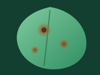
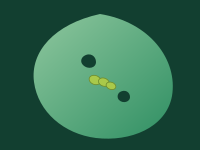
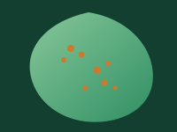
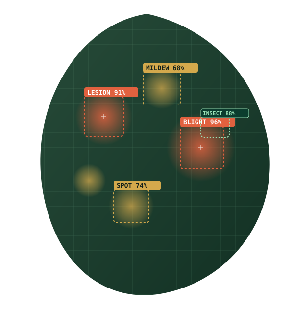

Welcome back, Amara 🌿
Here's what's happening across your fields this week.
+18%
312
Scans this month
-6%
27
High-severity cases
+2.1%
96.4%
Avg. confidence
6 crops
14
Fields trackedScans per day, this week
Mon–SunSeverity breakdown
Low — 55%
Medium — 30%
High — 15%
Recent scans
View all
Early Blight — Tomato, Field 32 hours ago · 96% confidence
Powdery Mildew — Cucumber, Field 1Yesterday · 91% confidence

Insect Feeding Damage — Cabbage, Field 42 days ago · 84% confidence

Leaf Rust — Wheat, Field 73 days ago · 88% confidence
Diagnose a leaf
Upload a clear photo — Leaf Aid detects the disease and shows exactly why.
Upload photo
Drag & drop a leaf photo
or click to browse — JPG, PNG up to 10MB

HIGH SEVERITY
Early Blight
Detected on Tomato leaf
Tips for a great scan
- Use natural daylight — avoid strong flash or shadows.
- Fill the frame with a single leaf, spots and edges visible.
- Hold the camera steady and about 20cm from the leaf.
- Include both healthy and affected areas for context.
Ask the assistant
Not sure what you're looking at? Open the chatbot and describe the symptom in your own words.
Scan history
Every diagnosis you've run, searchable by crop, disease or field.
Early Blight — Tomato, Field 3Today, 10:24am · 96% confidence
Powdery Mildew — Cucumber, Field 1Yesterday, 4:10pm · 91% confidence
Insect Feeding Damage — Cabbage, Field 42 days ago · 84% confidence
Leaf Rust — Wheat, Field 73 days ago · 88% confidence
Bacterial Leaf Spot — Tomato, Field 35 days ago · 93% confidence
Downy Mildew — Cucumber, Field 21 week ago · 89% confidence
Healthy leaf — Cabbage, Field 41 week ago · 99% confidence
Disease library
Search and filter 120+ diseases across 40 crops.
High risk
Tomato
Early Blight
Concentric dark rings with a yellow halo.
Medium risk
Cucumber
Powdery Mildew
White powdery patches on the leaf surface.
Medium risk
Wheat
Leaf Rust
Orange pustules scattered across the blade.
Low risk
Cabbage
Insect Feeding Damage
Irregular holes from active pests.
High risk
Tomato
Bacterial Leaf Spot
Water-soaked spots merging into lesions.
High risk
Cucumber
Downy Mildew
Angular yellow patches, fuzzy undersides.
Settings
Manage your profile and notification preferences.